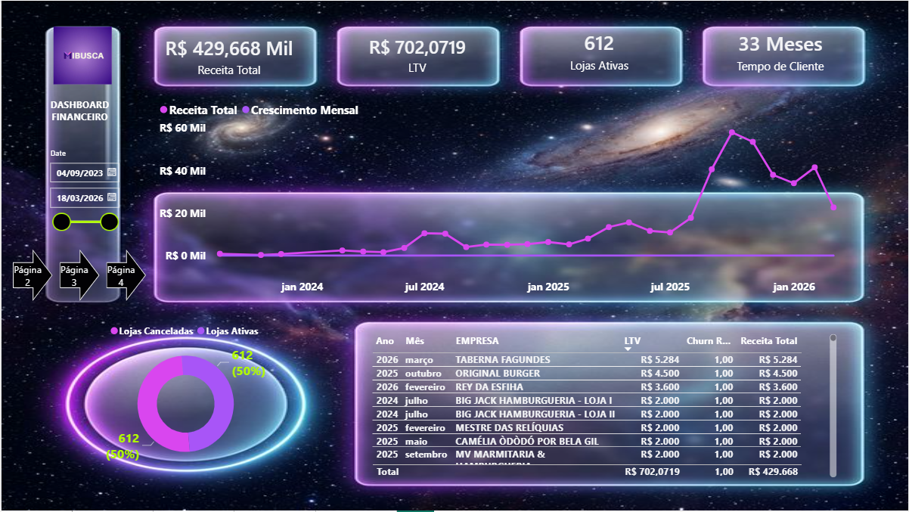

01 · Dados e BI
Logística

BI Logimax
Camada analítica para conectar dados logísticos e financeiros a uma visão objetiva da operação.
- KPIs executivos e operacionais
- Modelagem e consistência de métricas
- Dashboards para acompanhamento e decisão